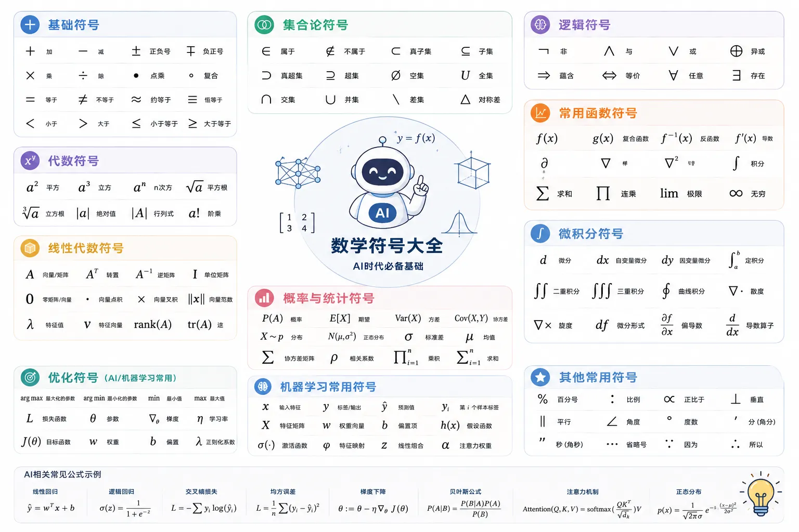

常用数学符号
看懂 AI 论文和教程的第一道门槛，往往不是数学本身，而是满页的数学符号。

本章节把 AI 学习中最常用的符号整理成表，可以先大概看下，或者后期需要查询的时候再来看：
-
顺序通读：每个符号都附了什么时候用的说明，大概过下，建立整体印象。
-
随查随用：读论文或教程卡在某个符号上时，回来查表。
大部分符号配了可运行的 Python 示例，动手算一遍比看十遍更有效。
数与基本运算
这些符号从小学数学就在用，是所有公式的地基。
| 符号 | 含义 | 示例 |
|---|---|---|
| 加、减、乘、除 | ||
| 正负号，表示两个可能的取值 | ||
| 不等于 | ||
| 小于、大于、小于等于、大于等于 | ||
| 约等于 | ||
| 绝对值，去掉负号 | ||
| 平方根 | ||
| n 次方根 | ||
| 平方、n 次幂 | ||
| 倒数（负指数） | ||
| 阶乘，从 1 乘到 n | ||
| 无穷大 |
论文里乘号通常省略或写成一个小点： 表示 w 与 x 相乘，两种写法含义完全相同。
变量与字母约定
数学里字母不是随便选的，不同字母有默认角色。
| 字母 | 默认角色 | AI 语境中的典型含义 |
|---|---|---|
| 常量 | 固定不变的系数 | |
| 变量 | x 是输入特征，y 是输出标签 | |
| 权重与偏置 | 神经网络要学习的参数 | |
| 参数集合 | 模型所有参数的统称，读作 theta | |
| 数量 | 样本数、特征维数 | |
| 圆周率 | ||
| 自然常数 |
同时用 x 和 X 时要注意区分：小写通常表示单个数（标量），大写通常表示矩阵，这在小写一节会展开。
看到 不要慌，它只是"参数"的习惯符号，和 没有本质区别，论文作者选哪个纯看喜好。
指数与对数
AI 中出场率最高的一对函数。
出现在 sigmoid 和 softmax 里，负责把数值"放大或压缩"； 出现在交叉熵损失里，负责"把乘法变成加法"。
| 符号 | 含义 | 示例 |
|---|---|---|
| a 的 n 次方 | ||
| 任何非零数的 0 次方 | ||
| 以 e 为底的指数函数 | ||
| 以 a 为底 x 的对数 | ||
| 自然对数（以 e 为底） | ||
| 论文中通常默认指 |
四条运算规则必须熟练，它们在推导损失函数时会反复用到：
换底公式可以把任意底的对数换成自然对数，编程时常用：
实例
# Python 的 math.log(x, base) 内部就是这么做的
import math
x = 100
base = 2
# 直接调用
print(math.log(x, base))
# 换底公式手写：log_2(100) = ln(100) / ln(2)
print(math.log(x) / math.log(base))
执行以上代码输出结果为：
6.643856189774725 6.643856189774725
为什么要加一个小常数 ε：对数的真数必须大于 0，但训练早期模型可能输出 0 概率，此时 会得到负无穷，导致训练崩溃。
所以实现中通常会写成 ，其中 是一个很小的正数，比如 0.0000001。
函数相关符号
函数就是"输入到输出的对应规则"，神经网络本质上是很多层函数的复合。
| 符号 | 含义 | 示例 / 说明 |
|---|---|---|
| 函数，x 经过 f 映射后的结果 | ||
| f 把集合 A 的元素映射到集合 B | 描述函数的"类型签名" | |
| 反函数，撤销 f 的操作 | ||
| 复合函数，先算 g(x) 再代入 f | ||
| x 的变化量 | ||
| y 的预测值（读作 y-hat） | 与真实标签 y 区分 | |
| sigmoid 激活函数 |
机器学习里 （读作 y-hat）专指模型预测值， 指真实标签，两者之差就是预测误差。
复合函数是理解神经网络的关键：一个两层网络本质上就是 ，反向传播逐层计算梯度，靠的正是复合函数求导的链式法则。
实例
# 设 g(x) = x + 1，f(x) = x^2
def g(x):
return x + 1 # 内层函数
def f(x):
return x ** 2 # 外层函数
# 复合：先算 g(x)，再把结果代入 f
print(f(g(3))) # g(3)=4, f(4)=16
print(f(g(3)) == (3 + 1) ** 2)
执行以上代码输出结果为：
16 True
求和与求积
是 AI 公式里出镜率最高的符号，没有之一。
它的意思是：让下标 i 从下界取到上界，把每一项加起来。
读作"i 从 1 到 n，对 x 下标 i 求和"。分三步读一个求和式：
| 步骤 | 看什么 | 本例中 |
|---|---|---|
| 1 | 求和变量是谁（下标） | i |
| 2 | 求和范围（下界到上界） | 1 到 n |
| 3 | 每一项长什么样 |
求积符号 结构相同，只是把"加"换成"乘"：
两个最常见的 AI 公式都建立在求和上：
均方误差损失：
神经元的加权求和：
实例
w = [0.5, -1.0, 2.0] # 权重，对应公式里的 w_i
x = [2.0, 3.0, 1.0] # 输入，对应公式里的 x_i
b = 0.1 # 偏置
# sum_{i=1}^{3} w_i * x_i 就是下面这一行
z = sum(wi * xi for wi, xi in zip(w, x)) + b
print(z)
# 展开验证：0.5*2 + (-1.0)*3 + 2.0*1 + 0.1
print(0.5*2 + (-1.0)*3 + 2.0*1 + 0.1)
执行以上代码输出结果为：
0.1 0.1
集合与逻辑
集合符号描述"数据属于哪一类"，逻辑符号描述"条件如何组合"，概率与机器学习理论大量使用。
| 符号 | 含义 | 示例 |
|---|---|---|
| 属于 | ||
| 不属于 | ||
| 子集 | ||
| 并集 | ||
| 交集 | ||
| 空集（不含任何元素） | ||
| 实数集合 | ||
| 任意、所有（全称量词） | ||
| 存在（存在量词） | ||
| 逻辑非 | ||
| 逻辑与、逻辑或 | ||
| 推出、蕴含 | ||
| 等价（当且仅当） |
这些符号最常出现在论文的定理和假设部分，例如""读作"对任意大于 0 的 epsilon，存在一个 N"。
上下标与取值范围
这一节解决两个高频困惑：下标到底什么意思，以及区间符号怎么读。
下标：给同一类变量编号
训练数据有很多样本，都用 x 表示会混淆，于是用下标区分：。
当下标有两个时，如 ，通常表示"第 i 行第 j 列"，这正是矩阵的元素。
向量记作 （加粗），它的分量是 ；矩阵 的形状用"行数 × 列数"描述，记作 。
区间与取值范围
圆括号表示"不包含端点"，方括号表示"包含端点"。
| 符号 | 读法 | 含义 |
|---|---|---|
| 开区间 | a 和 b 之间的所有数，不含两端 | |
| 闭区间 | a 和 b 之间的所有数，含两端 | |
| 半开区间 | 含 b 不含 a | |
| x 属于闭区间 | x 取 0 到 1 之间的值，可以是端点 |
sigmoid 函数的值域是 ，这个开区间意味着输出永远严格大于 0 且小于 1，这正是它能当"概率"用的数学原因。
希腊字母表
论文里成片的希腊字母不是装饰，每个都有默认含义，认全了读论文会顺畅很多。
| 大写 | 小写 | 名称 | AI 中的常见含义 |
|---|---|---|---|
| alpha | 学习率 | ||
| beta | 动量系数、Adam 的二阶矩衰减率 | ||
| gamma | 折扣因子（强化学习） | ||
| delta | 变化量、增量 | ||
| epsilon | 极小正数、探索概率 | ||
| theta | 模型参数 | ||
| lambda | 正则化系数 | ||
| pi | 策略（强化学习）、圆周率 | ||
| sigma | 求和 / sigmoid 函数、标准差 | ||
| phi | 特征映射函数 | ||
| omega | 模型权重（部分论文） |
同一个符号在不同领域含义不同： 在激活函数语境是 sigmoid，在统计语境是标准差，在求和公式里大写 是求和算子。看含义先看语境，这是读论文最重要的习惯。
概率与统计
机器学习的核心语言。分类模型输出的"置信度"、损失函数的推导、贝叶斯方法，都建立在这些符号上。
| 符号 | 含义 | 示例 / 说明 |
|---|---|---|
| 事件 A 发生的概率 | ||
| 条件概率：B 发生时 A 的概率 | 竖线读作"在……条件下" | |
| 联合概率：A 与 B 同时发生 | ||
| 贝叶斯公式 | 所有贝叶斯方法的根基 | |
| 期望（平均值） | ||
| 方差（离散程度） | ||
| 均值 | 数据分布的中心 | |
| 方差（sigma 平方） | ||
| 服从……分布 | ||
| 正态分布（高斯分布） | 括号里是均值和方差 | |
| 信息熵 |
交叉熵损失是这些符号的集大成者，把求和、条件概率、对数组合在了一起：
逐个符号拆解： 是第 i 个样本的真实标签， 是模型预测概率， 把概率连乘变成连加，负号让"损失越小越好"。
是"Normal"的花体写法，指正态分布，不是字母 N。花体符号 、 常用来表示分布、损失函数、数据集这类"集合性"的对象。
线性代数
神经网络的底层结构。深度学习框架的每一次矩阵运算，都在用这些符号。
| 符号 | 含义 | 示例 / 说明 |
|---|---|---|
| 向量（加粗小写） | ||
| 矩阵（加粗大写） | m 行 n 列的数表 | |
| 转置：行列互换 | 行向量变列向量 | |
| 矩阵乘法 | 不是逐元素相乘 | |
| 逐元素相乘（Hadamard 积） | 同形状矩阵对应位置相乘 | |
| 范数（向量的"长度"） | ||
| L1 范数：绝对值之和 | L1 正则化的基础 | |
| 矩阵的逆 | ||
| 单位矩阵 | 对角线为 1，其余为 0 | |
| 点积（内积） |
点积是注意力机制的骨架：transformer 每一层都在计算查询向量与键向量的点积，衡量它们的"相似程度"。
实例
# x · y = sum(x_i * y_i)，||x||_2 = sqrt(sum(x_i^2))
import math
x = [1.0, 2.0, 3.0]
y = [4.0, 0.0, -1.0]
# 点积 x · y
dot = sum(xi * yi for xi, yi in zip(x, y))
print(dot)
# L2 范数 ||x||_2
norm2 = math.sqrt(sum(xi ** 2 for xi in x))
print(norm2)
# 展开验证
print(1.0*4.0 + 2.0*0.0 + 3.0*(-1.0))
print(math.sqrt(1 + 4 + 9))
执行以上代码输出结果为：
1.0 3.7416573867739413 1.0 3.7416573867739413
微积分
训练的本质是"沿着梯度的反方向调整参数"，所以论文里的优化章节离不开这些符号。
不需要现在就会算，能读懂每张脸即可。
| 符号 | 含义 | 示例 / 说明 |
|---|---|---|
| 导数：y 随 x 的变化率 | ||
| 导数的另一种写法 | ||
| 偏导数：只看 x 变化时 f 的变化率 | 多变量函数用 | |
| 梯度：所有偏导组成的向量 | ||
| 积分，微分的逆运算 | ||
| 极限：x 趋近 a 时的值 |
深度学习最重要的公式只用到了上表的两行，梯度下降的参数更新规则：
逐个符号拆解： 是参数， 表示"用右边的值更新左边"， 是学习率， 是损失函数 J 对参数 θ 的梯度。
一句话翻译：新参数 = 旧参数 − 学习率 × 梯度，即朝着让损失下降最快的方向走一小步。
读作 nabla 或"梯度算子"，它不是数，而是一个"对后面所有变量求偏导"的操作指令，很像编程里的高阶函数。
优化与其他高频符号
最后这一节是论文中零散出现但很关键的符号。
| 符号 | 含义 | 示例 / 说明 |
|---|---|---|
| 使 f 取最大值的 x | 返回的是 x，不是最大值本身 | |
| 使 f 取最小值的 x | 训练即求 | |
| f 的最小值 | 返回数值本身 | |
| softmax 函数 | ||
| 函数复合 | ||
| 定义为 | 左边定义为右边的值 | |
| 正比于 | ||
| ReLU 激活函数 | ||
| 大 O 记号：增长量级 | 忽略常数，只看规模 |
分类模型预测时做的正是 ：取概率最大的那个类别，argmax 返回的是类别编号，而不是概率数值。
与 极易混淆： 回答"最大值是多少"， 回答"在哪个 x 处取到最大值"。分类任务关心的是后者。
学习建议
不需要死记符号表，方法比记忆更有效。
第一，养成逐符号拆解的习惯：拿到公式，先问每个符号是运算符、变量还是函数，再问它在当前语境代表什么，拆完往往就不神秘了。
第二，优先吃透三样东西： 求和、指数与对数、下标记号。它们是读懂线性代数和微积分公式的前置门槛，本文各自有专门小节。
第三，遇到不认识的符号直接搜索"符号名 + 数学含义"，比死磕教材更快。
符号是地图，不是地形。真正的理解来自用它们算过具体例子，文中每个 Python 实例都值得亲手跑一遍。

点我分享笔记